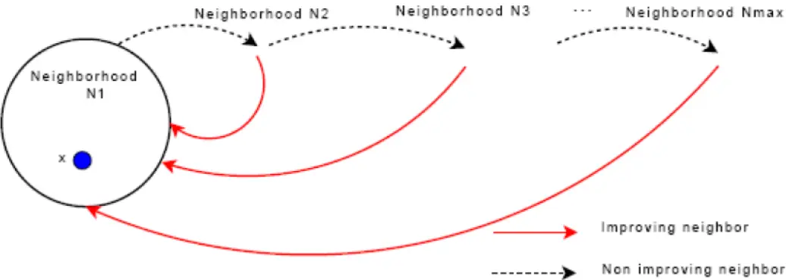

变邻域搜索#
Reference
VNS（变邻域搜索，Variable Neighborhood
Search）是一种元启发式算法，旨在通过系统地改变邻域结构来探索解空间，从而避免陷入局部最优.
以下是其核心内容的简明解释：
核心思想
邻域多样化：
定义多个不同的邻域结构（如简单交换、插入、反转等），按一定顺序依次尝试.
逃离局部最优：
当在当前邻域无法找到更优解时，切换到更大或更复杂的邻域继续搜索，强制跳出局部最优.

当在本邻域搜索找不出一个比当前解更优的解的时候，我们就跳到下一个邻域继续进行搜索.
如图中虚黑线所示.
当在本邻域搜索找到了一个比当前解更优的解的时候，我们就跳回第一个邻域重新开始搜索.
如图中红线所示
算法步骤
VNS算法求解组合优化问题（最小化）的流程文字描述如下：
初始化
选择邻域结构集合\(\mathcal{N}_k\)（\(k = 1, \ldots, k_{\max}\)），用于抖动阶段；选择邻域结构集合\(N_{\ell}\)（\(\ell = 1, \ldots, \ell_{\max}\)），用于局部搜索.
找到一个初始解\(x\)，并使用随机变邻域搜索（RVNS）对其进行改进.
选择一个停止条件.
重复以下步骤，直到满足停止条件： 1. 令\(k \leftarrow 1\)； 2.
重复以下步骤，直到\(k = k_{\max}\)： -
抖动：从\(x\)的第\(k\)个邻域\(\mathcal{N}_k(x)\)中随机生成一个点\(x'\)；
通过变邻域下降法（VND）进行局部搜索： -
令\(\ell \leftarrow 1\)； -
重复以下步骤，直到\(\ell = \ell_{\max}\)： -
邻域探索：在\(N_{\ell}(x')\)中找到\(x'\)的最优邻域解\(x''\)；
是否变换邻域：如果\(f(x'') < f(x')\)，则令\(x' \leftarrow x''\)且\(\ell \leftarrow 1\)；否则令\(\ell \leftarrow \ell + 1\)；
是否变换邻域：如果这个局部最优解优于当前解，则移动到该解（\(x \leftarrow x''\)），并从\(\mathcal{N}_1\)开始继续搜索（\(k \leftarrow 1\)）；否则，令\(k \leftarrow k + 1\).
关键特点
灵活性：邻域结构可根据问题定制（如TSP中的2-opt、3-opt）.
鲁棒性：通过多邻域切换增强全局搜索能力.
高效性：在中等规模问题中表现优异.
优缺点
优点：实现简单、参数少、易于结合其他算法.
缺点：邻域设计依赖经验，大规模问题可能需优化策略.
VNS通过动态调整搜索方向，在局部开发与全局探索间取得平衡，是解决复杂组合优化问题的有效工具.
VNS算法求解CVRPTW问题
VNS算法设计
解的表示
如果解仅包含顾客编号时，难以区分各顾客具体分配的配送路线.
因此，将配送中心以大于5的数字形式插入解中.
若配送中心最多允许K辆车服务N个顾客，则插入K个代表配送中心的数字.
解的表现形式示例：
解表示：1263475
配送路线：配送中心6和7将12345分割成3条配送路线
第1条：0 → 1 → 2 → 0
第2条：0 → 3 → 4 → 0
第3条：0 → 5 → 0
解表示：1267345
配送路线：配送中心6和7将12345分割成2条配送路线
第1条：0 → 1 → 2 → 0
第2条：0 → 3 → 4 → 5 → 0
解表示：6712345
配送路线：配送中心6和7将12345分割成1条配送路线，即0 → 1 → 2 → 3
→ 4 → 5 → 0
解表示：1234567
配送路线：配送中心6和7将12345分割成1条配送路线，即0 → 1 → 2 → 3
→ 4 → 5 → 0
解表示：6123457
配送路线：配送中心6和7将12345分割成1条配送路线，即0 → 1 → 2 → 3
→ 4 → 5 → 0
SA求解CVRPTW问题中的解可表示为1 - (N + K -
1)的随机排列，上述5种情况涵盖了将解转换为配送方案时会遇到的情形.
目标函数
第1点中的表示解的方式，无法保证分割出的各条配送路线都满足装载量约束.
为解决违反约束的问题，对违反约束的配送路线施加惩罚，以使分割出的配送路线满足装载量约束.
配送方案的总成本通过以下公式计算：
\[f(s) = c(s) + \alpha \times q(s) + \beta \times w(s)\]其中：
违反装载量约束之和\(q(s)\)的计算公式为：
\[q(s)=\sum_{k = 1}^{K}\max\left\{\left(\sum_{i\in N}d_{i}\sum_{j\in\Delta^{+}(i)}x_{ijk}-C\right),0\right\}\]所有顾客违反的时间窗约束之和\(w(s)\)的计算公式为：
\[w(s)=\sum_{i = 1}^{n}\max\left\{\left(l_{i}-b_{i}\right),0\right\}\]
式中各符号含义如下：
\(s\)为配送方案；
\(f(s)\)为当前配送方案的总成本；
\(c(s)\)为车辆总行驶距离；
\(q(s)\)为各条路径违反的装载量约束之和；
\(w(s)\)为所有顾客违反的时间窗约束之和；
\(\alpha\)为违反装载量约束的惩罚因子；
\(\beta\)为违反时间窗约束的惩罚因子；
\(K\)为配送车辆集合；
\(N = V\setminus\{0, n + 1\}\)为顾客集合；
\(\Delta^{+}(i)\)为从节点\(i\)出发的弧的集合；
\(d_{i}\)为顾客\(i\)的需求量；
\(x_{ijk}\)为货车\(k\)是否从节点\(i\)出发前往节点\(j\)；
\(C\)为货车最大装载量；
\(n\)为顾客数目；
\(l_{i}\)为货车到达顾客\(i\)的时间；
\(b_{i}\)为顾客\(i\)的右时间窗.
初始解生成
可以使用贪心算法等启发式方法生成一个初始可行解.
例如，按照客户需求和距离配送中心的远近，依次将客户分配给不同的车辆，形成初始的车辆路径方案.
邻域结构定义
假设顾客数目为\(N\)，配送中心最多允许\(K\)辆车进行配送，那么当前解可表示为：
\[R = [R(1),R(2),\cdots R(i),\cdots,R(j),\cdots R(N + K - 2),R(N + K - 1)]\]交换操作
若选择的交换位置为\(i\)和\(j\)（\(i \neq j\)，\(1 \leq i,j \leq N + K - 1\)），交换第\(i\)个和第\(j\)个位置上的元素后的解表示为：
\[R = [R(1),R(2),\cdots R(j),\cdots,R(i),\cdots R(N + K - 2),R(N + K - 1)]\]以5个顾客且最多允许使用3辆货车为例：
初始解情况：假设当前解为1263745，该解表示3条配送路线：
第1条：\(0 \to 1 \to 2 \to 0\)
第2条：\(0 \to 3 \to 0\)
第3条：\(0 \to 4 \to 5 \to 0\)
交换后情况：若交换位置为\(i = 3\)和\(j = 4\)，交换后的解为1236745，此时表示2条配送路线：
第1条：\(0 \to 1 \to 2 \to 3 \to 0\)
第2条：\(0 \to 4 \to 5 \to 0\)
逆转操作
逆转操作指的是将两个位置之间所有元素的排序进行反转.
若选择的逆转位置为\(i\)和\(j\)（\(i \neq j\)，\(1 \leq i,j \leq N\)）
，逆转第\(i\)个和第\(j\)个位置之间所有元素的排序后，解可表示为：
\[R = [R(1),R(2),\cdots R(j),R(j - 1),\cdots,R(i + 1),R(i),\cdots R(N + K - 2),R(N + K - 1)]\]以5个顾客且最多允许使用3辆货车为例：
初始解情况：假设当前解为1263745，该解表示3条配送路线：
第1条：\(0 \to 1 \to 2 \to 0\)
第2条：\(0 \to 3 \to 0\)
第3条：\(0 \to 4 \to 5 \to 0\)
逆转后情况：若逆转位置为\(i = 3\)和\(j = 7\)，逆转后的解为1254736，此时表示2条配送路线：
第1条：\(0 \to 1 \to 2 \to 5 \to 4 \to 0\)
第2条：\(0 \to 3 \to 0\)
插入操作
插入操作是将在第一个位置上选择的元素，插入到第二个位置上选择的元素后面.
若选择的插入位置为\(i\)和\(j\)（\(i \neq j\)，\(1 \leq i,j \leq N\)），将第\(i\)个位置上的元素插入第\(j\)个位置上的元素后，解可表示为：
\[R = [R(1),\cdots R(i - 1),R(i + 1),\cdots R(j - 1),R(j),R(i),R(j + 1),\cdots R(N + K - 1)]\]以5个顾客且最多允许使用3辆货车为例：
初始解情况：假设当前解为1263745，该解表示3条配送路线：
第1条：\(0 \to 1 \to 2 \to 0\)
第2条：\(0 \to 3 \to 0\)
第3条：\(0 \to 4 \to 5 \to 0\)
插入后情况：若插入位置为\(i = 3\)和\(j = 7\)，插入后的解为1237456，此时表示2条配送路线：
第1条：\(0 \to 1 \to 2 \to 3 \to 0\)
第2条：\(0 \to 4 \to 5 \to 0\)
扰动操作
在第3点已经介绍交换操作、逆转操作和插入操作这3个邻域操作，利用这3种操作能得到3个不同的邻域集合.
在使用邻域操作获取一条路线的邻域集合前，还有一个重要步骤，即扰动操作.
其目的是进一步扩大搜索范围，找到更多的解.
扰动操作是对当前解进行“适当的调整”，具体方式如下：在使用某个邻域操作前，先对当前解进行操作以得到一个“扰动解”，再用该邻域操作获取这个“扰动解”的邻域集合，从而进行后续一系列操作.
示例
假设当前解为1263745，
交换操作的扰动：若准备使用交换操作，随机生成1 -
7中的两个不同数字（如2和5），交换这两个位置上的城市，得到“扰动解”1763245.
逆转操作的扰动：若准备使用逆转操作，同样随机生成1 -
6中的两个不同数字（如2和5），逆转这两个位置之间所有城市的排序，得到“扰动解”1736245.
插入操作的扰动：若准备使用插入操作，随机生成1 -
6中的两个不同数字（如2和5），将第2个位置上的城市插入第5个位置上的城市后面，得到“扰动解”1637245
.
局部搜索策略
当对当前解\(S_{curr}\)使用某个邻域操作得到其邻域集合后，如何处理该邻域集合，才能让\(S_{curr}\)向“更好”的方向变化呢？
首先计算邻域集合中所有解的总距离.
接着找到总距离最短的解\(S_{min}\)，并用它替换当前解\(S_{curr}\)，即令\(S_{curr} = S_{min}\).
然后求出新\(S_{curr}\)的邻域集合以及其中所有解的总距离，再次找到总距离最短的解替换当前解.
按照上述方式迭代，直至迭代\(\ell_{\max}\)次后，停止对\(S_{curr}\)在当前邻域的搜索.
邻域变换策略
局部搜索策略介绍了针对当前解\(S_{curr}\)在一个邻域中的搜索方法.
由于有交换、逆转、插入3个邻域操作，对应产生3个不同结构的邻域，分别编号为\(k = 1\)（交换操作邻域）、\(k = 2\)（逆转操作邻域）、\(k = 3\)（插入操作邻域）
. 在一个邻域搜索结束后，要在另一个邻域继续搜索，具体步骤如下：
STEP1: 设\(k = 1\).
STEP2:
根据\(k\)的值跳转：若\(k = 1\)，转至STEP3；若\(k = 2\)，转至STEP4；若\(k = 3\)，转至STEP5；否则，转至STEP7.
STEP3:
针对交换操作邻域：对\(S_{curr}\)的交换操作邻域进行局部搜索得到最优解\(S_{swap}\)，计算\(S_{swap}\)的总距离\(L_{swap}\)，令\(L_{curr} = L_{swap}\).
若\(L_{curr}<L_{best}\)（\(L_{best}\)为最优路线总距离），则更新\(S_{best} = S_{curr} = S_{swap}\)，\(L_{best} = L_{curr}\)，\(k = 0\)，转至STEP6
.
STEP4:
针对逆转操作邻域：对\(S_{curr}\)的逆转操作邻域进行局部搜索得到最优解\(S_{reversion}\)，计算其总距离\(L_{reversion}\)，令\(L_{curr} = L_{reversion}\).
若\(L_{curr}<L_{best}\)，则更新\(S_{best} = S_{curr} = S_{reversion}\)，\(L_{best} = L_{curr}\)，\(k=0\)，转至STEP6.
STEP5:
针对插入操作邻域：对\(S_{curr}\)的插入操作邻域进行局部搜索得到最优解\(S_{insertion}\)，计算其总距离\(L_{insertion}\)，令\(L_{curr} = L_{insertion}\).
若\(L_{curr}<L_{best}\)，则更新\(S_{best} = S_{curr} = S_{insertion}\)，\(L_{best} = L_{curr}\)，\(k=0\)，转至STEP6.
STEP6: \(k=k+1\)，转至STEP2.
STEP7:
终止循环，输出当前解\(S_{curr}\)、最优解\(S_{best}\)、当前解的总距离\(L_{curr}\)和最优解的总距离\(L_{best}\)
.
采用路径编码方式的原因:
在模拟退火算法求解CVRPTW问题中，采用路径编码方式（如
[1,2,6,3,7,4,5]）主要基于以下原因：
直观性与易理解性 -
直接对应实际路径：编码中的每个子序列（如
[1,2,6]）明确表示一辆车的完整路径（从配送中心出发，访问客户，返回配送中心）. -
可读性强：无需复杂解码即可直接观察车辆的行驶顺序和客户分配情况.
邻域操作的便利性
支持灵活的交换/插入操作：
交换操作：直接交换不同路径中的客户节点（如交换
1和3），无需额外处理车辆划分.插入操作：将客户节点从一个路径插入到另一个路径的任意位置，操作简单.
约束检查简化：邻域操作生成的新路径可直接检查容量和时间窗约束，无需重新划分车辆.
天然支持多车辆场景
显式区分车辆：每个子序列对应一辆车，车辆数量和路径独立.
动态调整车辆数：通过邻域操作可隐式调整车辆数量（例如合并或拆分路径）.
与问题特征匹配
时间窗和容量约束的处理：
路径编码便于按顺序计算每个客户的到达时间和车辆负载.
直接检查每个子路径的约束（如总负载不超过车辆容量，时间窗不违反）.
对比其他编码方式的优势
避免复杂解码：
与“节点序列编码”（如
[1,3,2,4]，需算法自动划分路径）相比，路径编码无需动态划分车辆，减少计算开销.减少无效解：
与“染色体编码”（如二进制表示客户是否被访问）相比，路径编码直接生成有效路径，降低不可行解的概率.
算法实现的高效性
目标函数计算简单：直接遍历每个子路径的节点，累加距离即可.
代码实现直观：生成初始解、邻域操作、约束检查等模块可独立设计，代码结构清晰.
路径编码是CVRPTW问题中最直观且高效的编码方式之一，其显式的车辆路径划分和灵活的操作特性，能够有效支持模拟邻域搜索和约束处理，最终在解质量和计算效率之间取得平衡.